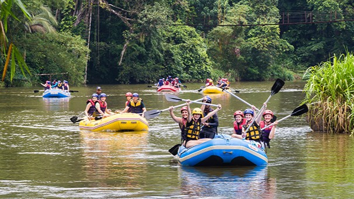
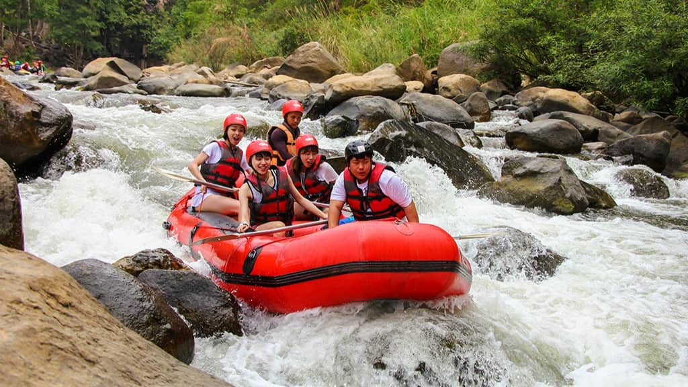
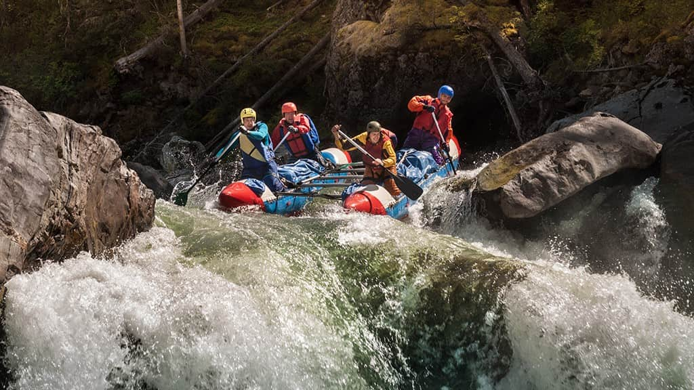

Available Trips
The Family Float (Class I - II)

Perfect for beginners, families, and anyone looking to unwind, The Family Float offers a gentle, sun-soaked journey down the calmest stretches of the Main River. On this half-day excursion, you’ll glide past stunning canyon walls, spot local wildlife, and enjoy plenty of calm swimming holes. Our expert guides handle all the heavy lifting, allowing you to relax, take photos, and soak in the scenery. It’s the ultimate introduction to the river without any of the stress.
The Rapid Rush (Class III)

Ready to turn the adrenaline up a notch? The Rapid Rush is our most popular full-day adventure, designed for spirited beginners and intermediate paddlers alike. You will navigate rolling, continuous Class III rapids that promise plenty of splashes and heart-pounding teamwork. Halfway through the journey, we’ll pull off to a scenic riverbank for a freshly prepared deli-style lunch before heading back out to conquer the rest of the gorge.
Thunder Gorge Excursion (Class IV - V)

Strictly for experienced swimmers and true adrenaline junkies, The Thunder Gorge is an extreme, fast-paced white water challenge. Brace yourself for roaring drops, tight technical maneuvers, and massive waves as you tackle the most violent rapids Utah has to offer. This high-intensity trip requires fast reflexes, heavy paddling, and a true sense of adventure. Full safety gear, specialized high-buoyancy vests, and our most elite guides are provided.
Trips information
| Trip Name | Difficulty | Duration | Included Equipment | Price |
|---|---|---|---|---|
| The Family Float | Class I - II (Easy) | 3 Hours (Half Day) | Standard PFD, Paddle, Splash Jacket | *$65/person |
| The Rapid Rush | Class III (Moderate) | 6 Hours (Full Day + Lunch) | Premium PFD, Paddle, Helmet, Dry Bag | *$110/person |
| The Thunder Gorge | Class IV - V (Extreme) | 5 Hours (High Intensity) | High-Buoyancy PFD, Helmet, Wetsuit, Neoprene Booties | *$150/person | *These are reference prices, contact us to confirm final prices and availability |
CONTACT US!
And receive special package prices according to the date you are planning to come and the amount of people in your group